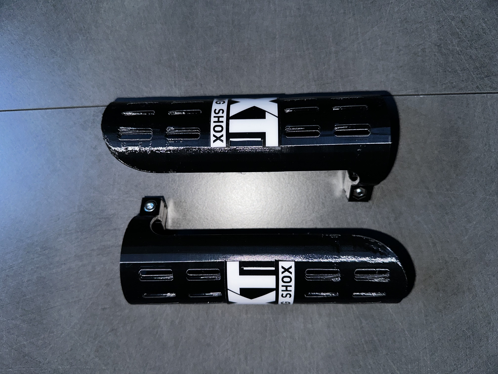
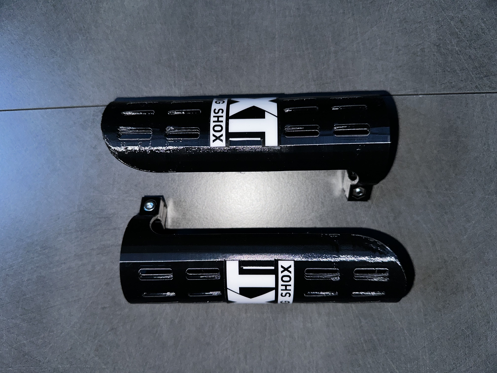

Protection de suspension EXT
 

45,00 €
Plastique technique TPU souple • Conception exclusive EXT • Visserie intégrée
DESCRIPTION
Ces protections ont été spécialement conçues pour s'adapter parfaitement à vos amortisseurs EXT. Elles forment un bouclier efficace contre les projectiles (pierres, terre) pour garder vos bonbonnes intactes durablement.
Leur design spécifique protège la zone la plus exposée aux chocs tout en assurant le refroidissement nécessaire grâce aux aérations intégrées.
Le matériau a été rigoureusement sélectionné pour sa capacité à absorber les impacts sans se briser, garantissant une protection fiable même dans les conditions les plus extrêmes.
POINTS CLÉS
- Fabrication en plastique technique souple (TPU) haute absorption.
- Conception exclusive pour une intégration parfaite sur amortisseurs EXT.
- Fixation sécurisée par visserie intégrée (fournie).
- Ventilation optimisée pour ne pas altérer le fonctionnement thermique.
- Résistance aux hydrocarbures et aux UV.